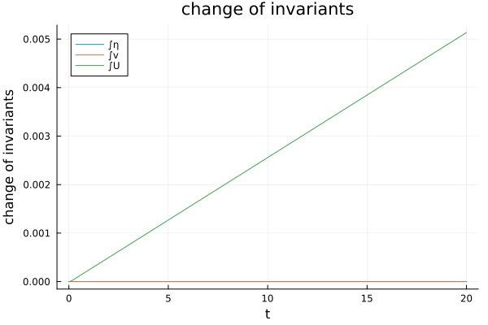
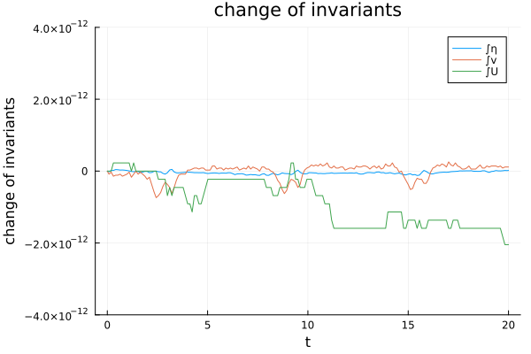

Callbacks
Callbacks provide additional functionality during simulations, such as monitoring solution properties, analyzing errors, or ensuring conservation of physical quantities. DispersiveShallowWater.jl implements three main callback types that can be used individually or in combination to enhance simulation analysis and performance monitoring.
When using multiple callbacks simultaneously, combine them using a CallbackSet:
callbacks = CallbackSet(analysis_callback, summary_callback)
sol = solve(ode, Tsit5(), callback = callbacks)Summary Callback
The SummaryCallback provides performance profiling information at the end of a simulation. It tracks computational time spent in different parts of the code and memory allocations, giving insights into the computational efficiency of the simulation.
The callback automatically prints a detailed timing breakdown showing:
- Total simulation time and memory allocations
- Time spent in different computational sections
- Number of function calls and average execution time per call
summary_callback = SummaryCallback()
sol = solve(ode, Tsit5(), callback = summary_callback)At the end of the simulation, the callback will display output similar to:
───────────────────────────────────────────────────────────────────────────────────────────
DispersiveSWE Time Allocations
─────────────────────── ────────────────────────
Tot / % measured: 440ms / 98.4% 867MiB / 99.9%
Section ncalls time %tot avg alloc %tot avg
───────────────────────────────────────────────────────────────────────────────────────────
rhs! 1.62k 420ms 97.0% 258μs 866MiB 100.0% 546KiB
solving elliptic system 1.62k 247ms 57.2% 152μs 357MiB 41.2% 225KiB
assembling elliptic operator 1.62k 167ms 38.6% 103μs 509MiB 58.8% 321KiB
hyperbolic terms 1.62k 3.49ms 0.8% 2.15μs 0.00B 0.0% 0.00B
~rhs!~ 1.62k 1.46ms 0.3% 902ns 1.55KiB 0.0% 0.98B
source terms 1.62k 42.0μs 0.0% 25.9ns 0.00B 0.0% 0.00B
analyze solution 3 13.2ms 3.0% 4.39ms 147KiB 0.0% 49.1KiB
───────────────────────────────────────────────────────────────────────────────────────────Analysis Callback
The AnalysisCallback monitors solution quality and physical properties during the simulation. It computes error norms and tracks conservation of important physical quantities at specified time intervals.
First, let's set up a basic simulation using the BBM-BBM equations:
using DispersiveShallowWater, OrdinaryDiffEqTsit5
# Define the physical setup
equations = BBMBBMEquations1D(gravity = 9.81)
initial_condition = initial_condition_convergence_test
# Create mesh and solver
coordinates_min = -35.0
coordinates_max = 35.0
N = 512
mesh = Mesh1D(coordinates_min, coordinates_max, N)
accuracy_order = 8
solver = Solver(mesh, accuracy_order)
# Create semidiscretization
semi = Semidiscretization(mesh, equations, initial_condition, solver,
boundary_conditions = boundary_condition_periodic)The analysis callback computes $L^2$ and $L^\infty$ errors by comparing the numerical solution to the initial condition at time $t$ (which can be the analytical solution, if available). Additional error types can be specified using the extra_analysis_errors parameter, and physical quantities can be monitored using extra_analysis_integrals.
The conservation error measures the temporal change of conserved quantities. For the BBM-BBM equations, important conserved quantities include the total water mass (integral of water height h), the total momentum (integral of v for flat bathymetry), and the entropy. The specific form of the entropy varies between different equation systems. For the BBM-BBM equations, the entropy is:
\[\mathcal E(t; \eta, v) = \frac{1}{2}\int_\Omega g\eta^2 + (\eta + D)v^2 \, dx\]
where $\eta$ is the total water height and $D$ is the still-water depth.
tspan = (0.0, 20.0)
ode = semidiscretize(semi, tspan)
analysis_callback = AnalysisCallback(semi; interval = 10,
extra_analysis_errors = (:conservation_error,),
extra_analysis_integrals = (waterheight_total,
velocity, entropy),
io = devnull)
saveat = range(tspan..., length = 100)
sol = solve(ode, Tsit5(), abstol = 1e-7, reltol = 1e-7,
save_everystep = false, callback = analysis_callback, saveat = saveat)The recorded errors and integrals can be accessed as NamedTuples using errors(analysis_callback) and integrals(analysis_callback).
The temporal evolution of monitored quantities can be visualized by plotting the analysis callback:
using Plots
plot(analysis_callback)More on different options for plotting the analysis callback can be found in the chapter Plotting Simulation Results.

The plot shows that linear invariants such as the total water mass and total velocity are conserved exactly. However, nonlinear invariants such as the entropy may exhibit small growth over time. This occurs because standard time integration methods do not necessarily preserve nonlinear invariants, even when the spatial discretization is conservative.
For a fully discrete entropy-conservative method, see also the following section about relaxation and the RelaxationCallback.
Relaxation Callback
To obtain entropy-conserving time-stepping schemes, DispersiveShallowWater.jl uses the relaxation method introduced in [Ketcheson2019] and further developed in [RanochaSayyariDalcinParsaniKetcheson2020]. The relaxation method is implemented as a RelaxationCallback, which takes a function representing the conserved quantity as the keyword argument invariant. This callback modifies the time step to maintain conservation of a specified quantity.
Entropy-Conserving Time Integration
To achieve exact conservation of the entropy, we add a relaxation callback to the simulation:
analysis_callback2 = AnalysisCallback(semi; interval = 10,
extra_analysis_errors = (:conservation_error,),
extra_analysis_integrals = (waterheight_total,
velocity, entropy),
io = devnull)
relaxation_callback = RelaxationCallback(invariant = entropy)
# Important: RelaxationCallback must come before AnalysisCallback
callbacks = CallbackSet(relaxation_callback, analysis_callback2)
sol = solve(ode, Tsit5(), abstol = 1e-7, reltol = 1e-7,
save_everystep = false, callback = callbacks, saveat = saveat)When using both RelaxationCallback and AnalysisCallback, the relaxation callback must be placed first in the CallbackSet. This ensures that the analysis callback monitors the solution after the relaxation step has been applied.
The relaxation method modifies each time step by finding an optimal relaxation parameter that preserves the specified invariant exactly. This results in entropy conservation almost up to machine precision and therefore provides a fully discrete structure-preserving numerical scheme:
plot(analysis_callback2, ylims = (-4e-12, 4e-12))
Relaxation
For a semidiscretization, which conserves a nonlinear invariant, the relaxation method conserves this nonlinear invariant up to machine precision also in the temporal discretization with minimal computational overhead. This can improve solution stability and accuracy, often reducing error growth over time from quadratic to linear.
The following comparison shows error growth with and without the relaxation method using the above simulation setup. For the comparison, it is important that we use a high accuracy order of our spatial discretization and sufficiently fine grid resolution. Otherwise, spatial discretization errors will dominate the total error, making it difficult to observe the improvements that relaxation provides to the temporal error behavior.
plot(analysis_callback2, what = (:errors,), exclude = (:conservation_error, :linf_error),
label = "L2 error with relaxation")
plot!(analysis_callback, what = (:errors,), exclude = (:conservation_error, :linf_error),
label = "L2 error without relaxation")For additional information on relaxation, how it works, and why and when it is useful, see Ranocha et al. (2020).
References
- Ketcheson2019Ketcheson (2019): Relaxation Runge-Kutta Methods: Conservation and stability for Inner-Product Norms. DOI: 10.1137/19M1263662
- RanochaSayyariDalcinParsaniKetcheson2020Ranocha, Sayyari, Dalcin, Parsani, Ketcheson (2020): Relaxation Runge–Kutta Methods: Fully-Discrete Explicit Entropy-Stable Schemes for the Compressible Euler and Navier–Stokes Equations. DOI: 10.1137/19M1263480